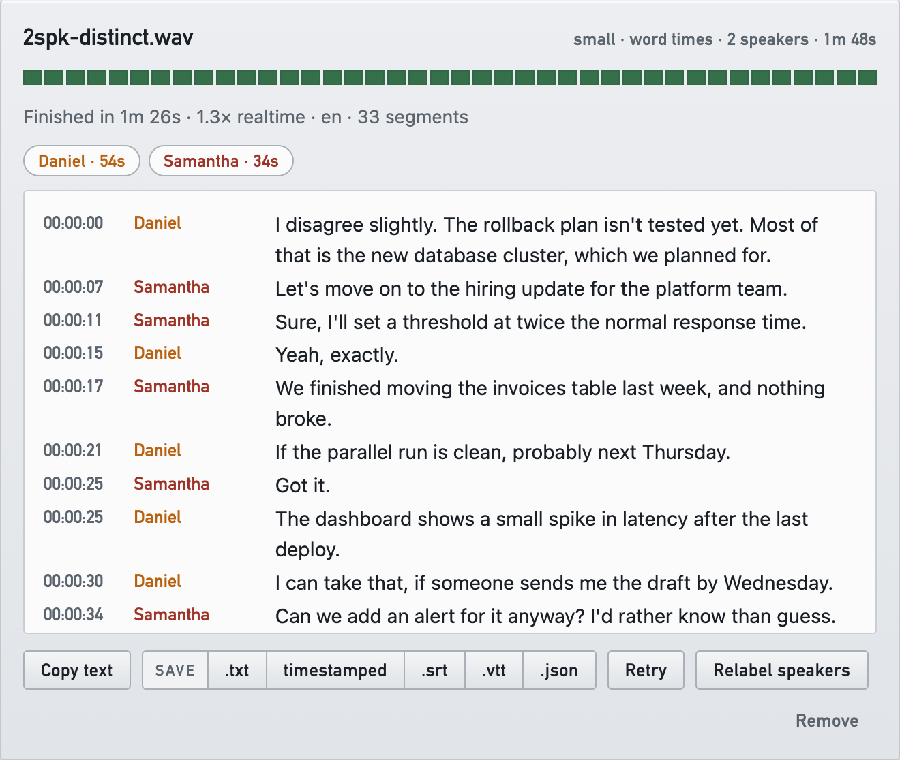

Drop, set, transcribe
Stage audio or video files, choose the model, language and quality, and press Transcribe. Uploads show their progress, and the transcript streams in live as each segment finishes.
Drag a recording onto a web page, and Whisper transcribes it on the workstation it runs on — with speaker labels, live progress and exports. Anyone on your network can use it; nothing leaves the network.
Windows installer with a tray app, or run it from source on
Windows, Linux or macOS with uv.

Stage audio or video files, choose the model, language and quality, and press Transcribe. Uploads show their progress, and the transcript streams in live as each segment finishes.
Speaker identification runs locally with sherpa-onnx — no PyTorch, no account. Set the speaker count, then name speakers or merge a stray one on the card, or relabel without transcribing again.
Zoom can record a separate audio file for each participant. Drop them together as one call and every line is attributed exactly, named after the person, with no guessing.
Copy the text, or save plain text, timestamped text, SRT, WebVTT with speaker voices, or JSON with segment and word timings.
An access token guards the page. A tamper-evident audit trail, behind a token of its own, records what happened — hashes, never transcript or prompt text.
With --preload it proves the card can really encode before
it calls itself ready, and when CUDA is not usable it says what to fix.
CPU works too, more slowly.
SHA256SUMS.txt on the release lets you check the
download.The server is one Python script that declares its own dependencies, so uv is the whole install:
git clone https://github.com/yorch/whisper-transcribe-server
cd whisper-transcribe-server
uv run transcribe_server.py --preloadOpen the link it prints. Add --device cpu on a machine
without an NVIDIA GPU. ffmpeg is needed for anything that is not plain
WAV.